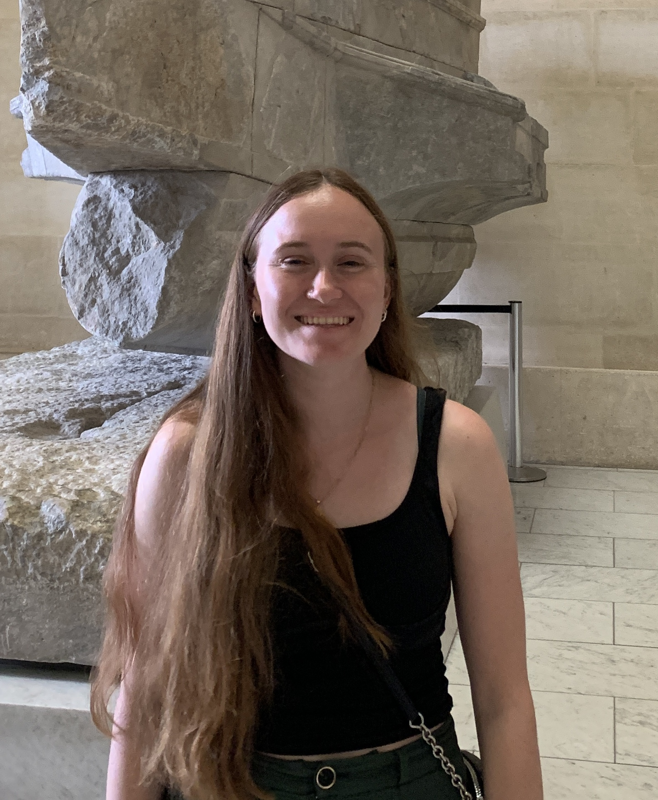

Kiera O'Hara

Hi! I'm Kiera. I am a Master’s student at Trinity College Dublin, studying Interactive Digital Media. With a background in journalism, writing, and editing, I am now making the transition to focus on UX design. I am passionate about blending functionality with creativity to make meaningful digital experiences. Explore this portfolio to see some of my previous projects in web development, design, and interactive media.